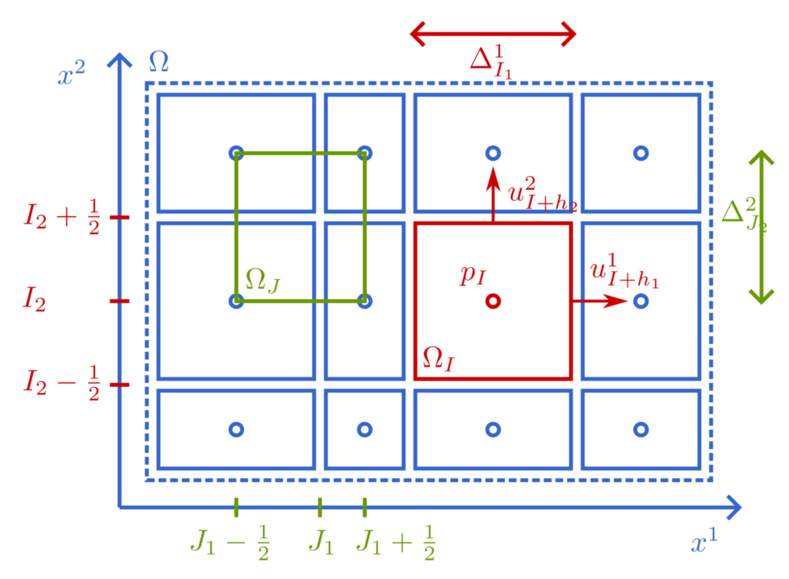

Spatial Discretization
To discretize the incompressible Navier-Stokes equations, we will use finite volumes on a staggered Cartesian grid, as proposed by Harlow and Welsh [1]. We will use the notation of Sanderse [2] [3] [4]. For simplicity, we will illustrate everything in 2D. The 3D discretization is very similar, but more verbose.
Finite volumes
The finite volumes are given by
\[\Omega_{i, j} = [x_{i - \frac{1}{2}}, x_{i + \frac{1}{2}}] \times [y_{j - \frac{1}{2}}, y_{j + \frac{1}{2}}].\]
They are fully defined by the vectors of volume faces $x = (x_{i + \frac{1}{2}})_i$ and $y = (y_{j + \frac{1}{2}})_j$. Note that the components are not assumed to be uniformly spaced. But we do assume that they are strictly increasing.
The volume center coordinates are determined from the volume boundary boundaries by $x_i = \frac{1}{2} (x_{i - \frac{1}{2}} + x_{i + \frac{1}{2}})$ and $y_j = \frac{1}{2} (y_{j - \frac{1}{2}} + y_{j + \frac{1}{2}})$. This allows for defining the shifted volumes $\Omega_{i + \frac{1}{2}, j}$, $\Omega_{i, j + \frac{1}{2}}$, and $\Omega_{i + \frac{1}{2}, j + \frac{1}{2}}$.
We also define the volume widths $\Delta x_i = x_{i + \frac{1}{2}} - x_{i - \frac{1}{2}}$ and volume heights $\Delta y_j = y_{j + \frac{1}{2}} - y_{j - \frac{1}{2}}$. The volume sizes are thus $| \Omega_{i, j} | = \Delta x_i \Delta y_j$.
In each finite volume $\Omega_{i, j}$, there are four different positions in which quantities of interest can be defined:
- The $p$-point $(x_i, y_j)$,
- The $u$-point $(x_{i + \frac{1}{2}}, y_j)$,
- The $v$-point $(x_i, y_{j + \frac{1}{2}})$,
- The $\omega$-point $(x_{i + \frac{1}{2}}, y_{j + \frac{1}{2}})$.
They form the corners of the top-right quadrant of $\Omega_{i, j}$.
The vectors of unknowns will not contain all the half-index values, only those of their own point:
- The vector $u_h$ will only consist of the components $u_{i + \frac{1}{2}, j}$.
- The vector $v_h$ will only consist of the components $v_{i, j + \frac{1}{2}}$.
- The vector $p_h$ will only consist of the components $p_{i, j}$.
In addtion, we define the full velocity vector $V_h = \begin{pmatrix} u_h \\ v_h \end{pmatrix}$.
We use the column-major convention (Julia, MATLAB, Fortran), and not the row-major convention (Python, C). Thus the $x$-index $i$ will vary for one whole cycle in the vectors $u_h$, $v_h$, $p_h$ before the $y$-index $j$ is incremented.
This finite volume configuration is illustrated as follows:

Interpolation
When a quantity is required outside of its native point, we will use interpolation. Examples:
- To compute $u$ at the pressure points:
\[\begin{split} u_{i, j} & = \frac{x_{i + \frac{1}{2}} - x_i}{x_{i + \frac{1}{2}} - x_{i - \frac{1}{2}}} u_{i - \frac{1}{2}, j} + \frac{x_i - x_{i - \frac{1}{2}}}{x_{i + \frac{1}{2}} - x_{i - \frac{1}{2}}} u_{i + \frac{1}{2}, j} \\ & = \frac{1}{2} (u_{i - \frac{1}{2}, j} + u_{i + \frac{1}{2}, j}) \end{split}\]
Interpolation weights from volume faces to volume centers are always $\frac{1}{2}$. - To compute $v$ at vorticity points:
\[v_{i + \frac{1}{2}, j + \frac{1}{2}} = \frac{x_{i + 1} - x_{i + \frac{1}{2}}}{x_{i + 1} - x_i} v_{i, j + \frac{1}{2}} + \frac{x_{i + \frac{1}{2}} - x_i}{x_{i + 1} - x_i} v_{i + 1, j + \frac{1}{2}}\]
- To compute $p$ at $v$-points:
\[p_{i, j + \frac{1}{2}} = \frac{y_{j + 1} - y_{j + \frac{1}{2}}}{y_{j + 1} - y_j} p_{i, j} + \frac{y_{j + \frac{1}{2}} - y_j}{y_{j + 1} - y_j} p_{i, j + 1}\]
Note that the grid is allowed to be non-uniform, so the weights of interpolation from volume centers to volume faces may unequal and different from $\frac{1}{2}$.
Finite volume discretization of the Navier-Stokes equations
We will consider the integral form of the Navier-Stokes equations. This has the advantage that some of the spatial derivatives dissapear, reducing the amount of finite difference approximations we need to perform.
Mass equation
The mass equation takes the form
\[\int_{\partial \mathcal{O}} V \cdot n \, \mathrm{d} \Gamma = 0, \quad \forall \mathcal{O} \subset \Omega.\]
Using the pressure volume $\mathcal{O} = \Omega_{i, j}$, we get
\[\int_{y_{j - \frac{1}{2}}}^{y_{j + \frac{1}{2}}} u(x_{i + \frac{1}{2}}, y) \, \mathrm{d} y - \int_{y_{j - \frac{1}{2}}}^{y_{j + \frac{1}{2}}} u(x_{i - \frac{1}{2}}, y) \, \mathrm{d} y + \int_{x_{i - \frac{1}{2}}}^{x_{i + \frac{1}{2}}} v(x, y_{j + \frac{1}{2}}) \, \mathrm{d} x - \int_{x_{i - \frac{1}{2}}}^{x_{i + \frac{1}{2}}} v(x, y_{j - \frac{1}{2}}) \, \mathrm{d} x = 0.\]
Assuming that the flow is fully resolved, meaning that $\Omega_{i, j}$ is is sufficiently small such that $u$ and $v$ are locally linear, we can perform the local approximation (quadrature)
\[\begin{split} \int_{y_{j - \frac{1}{2}}}^{y_{j + \frac{1}{2}}} u(x_{i - \frac{1}{2}}, y) \, \mathrm{d} y & \approx \Delta y_j u_{i - \frac{1}{2}, j}, \\ \int_{y_{j - \frac{1}{2}}}^{y_{j + \frac{1}{2}}} u(x_{i + \frac{1}{2}}, y) \, \mathrm{d} y & \approx \Delta y_j u_{i + \frac{1}{2}, j}, \\ \int_{x_{i - \frac{1}{2}}}^{x_{i + \frac{1}{2}}} v(x, y_{j - \frac{1}{2}}) \, \mathrm{d} x & \approx \Delta x_i v_{i, j - \frac{1}{2}}, \\ \int_{x_{i - \frac{1}{2}}}^{x_{i + \frac{1}{2}}} v(x, y_{j + \frac{1}{2}}) \, \mathrm{d} x & \approx \Delta x_i v_{i, j + \frac{1}{2}}. \end{split}\]
This yields the discrete mass equation
\[\Delta y_j (u_{i + \frac{1}{2}, j} - u_{i - \frac{1}{2}, j}) + \Delta x_i (v_{i, j + \frac{1}{2}} - v_{i, j - \frac{1}{2}}) = 0\]
which can also be written in the matrix form
\[M V_h = M_x u_h + M_y v_h = 0,\]
where $M = \begin{pmatrix} M_x & M_y \end{pmatrix}$ is the discrete divergence operator.
For the mass equation, the only approximation we have performed is quadrature. No interpolation or finite difference error is present.
Momentum equations
We will consider the two momentum equations separately. Grouping the convection, pressure gradient, diffusion, and body force terms in each of their own integrals, we get, for all $\mathcal{O} \subset \Omega$:
\[\begin{split} \frac{\partial }{\partial t} \int_\mathcal{O} u \, \mathrm{d} \Omega & = - \int_{\partial \mathcal{O}} \left( u u n_x + u v n_y \right) \, \mathrm{d} \Gamma - \int_{\partial \mathcal{O}} p n_x \, \mathrm{d} \Gamma + \nu \int_{\partial \mathcal{O}} \left( \frac{\partial u}{\partial x} n_x + \frac{\partial u}{\partial y} n_y \right) \, \mathrm{d} \Gamma + \int_\mathcal{O} f_u \mathrm{d} \Omega, \\ \frac{\partial }{\partial t} \int_\mathcal{O} v \, \mathrm{d} \Omega & = - \int_{\partial \mathcal{O}} \left( v u n_x + v v n_y \right) \, \mathrm{d} \Gamma - \int_{\partial \mathcal{O}} p n_y \, \mathrm{d} \Gamma + \nu \int_{\partial \mathcal{O}} \left( \frac{\partial v}{\partial x} n_x + \frac{\partial v}{\partial y} n_y \right) \, \mathrm{d} \Gamma + \int_\mathcal{O} f_v \mathrm{d} \Omega, \end{split}\]
where $n = (n_x, n_y)$.
This time, we will not let $\mathcal{O}$ be the reference finite volume $\Omega_{i, j}$ (the $p$-volume), but rather the shifted $u$- and $v$-volumes. Setting $\mathcal{O} = \Omega_{i + \frac{1}{2}, j}$ gives
\[\begin{split} \frac{\partial }{\partial t} \int_{y_{j - \frac{1}{2}}}^{y_{j + \frac{1}{2}}} \int_{x_i}^{x_{i + 1}} u(x, y) \, \mathrm{d} x \mathrm{d} y = & - \int_{y_{j - \frac{1}{2}}}^{y_{j + \frac{1}{2}}} \left( (u u)(x_{i + 1}, y) - (u u)(x_i, y) \right) \, \mathrm{d} y \\ & - \int_{x_i}^{x_{i + 1}} \left( (u v)(x, y_{j + \frac{1}{2}}) - (u v)(x, y_{j - \frac{1}{2}}) \right) \, \mathrm{d} x \\ & - \int_{y_{j - \frac{1}{2}}}^{y_{j + \frac{1}{2}}} \left( p(x_{i + 1}, y) - p(x_i, y) \right) \, \mathrm{d} y \\ & + \nu \int_{y_{j - \frac{1}{2}}}^{y_{j + \frac{1}{2}}} \left( \frac{\partial u}{\partial x}(x_{i + 1}, y) - \frac{\partial u}{\partial x}(x_i, y) \right) \, \mathrm{d} y \\ & + \nu \int_{x_i}^{x_{i + 1}} \left( \frac{\partial u}{\partial y}(x, y_{j + \frac{1}{2}}) - \frac{\partial u}{\partial y}(x, y_{j - \frac{1}{2}}) \right) \, \mathrm{d} x \\ & + \int_{y_{j - \frac{1}{2}}}^{y_{j + \frac{1}{2}}} \int_{x_i}^{x_{i + 1}} f_u(x, y) \, \mathrm{d} x \mathrm{d} y \\ \end{split}\]
This equation is still exact. We now introduce some approximations on $\Omega_{i + \frac{1}{2}, j}$ and its boundaries to remove all unknown continuous quantities.
- We replace the integrals with a mid-point quadrature rule.
- The the mid-point values of derivatives are approximated using a central finite difference:
\[\frac{\partial u}{\partial x}(x_i, y_j) \approx \frac{u_{i + \frac{1}{2}, j} - u_{i - \frac{1}{2}, j}}{x_{i + \frac{1}{2}} - x_{i - \frac{1}{2}}},\]
and similarly for $\frac{\partial u}{\partial x}(x_{i + 1}, y_j)$. If the grid is non-uniform, we also translate the derivative value to the midpoint:\[\frac{\partial u}{\partial y}(x_{i + \frac{1}{2}}, y_{j + \frac{1}{2}}) \approx \frac{\partial u}{\partial y} \left( x_{i + \frac{1}{2}}, \frac{y_i + y_{i + 1}}{2} \right) \approx \frac{u_{i + \frac{1}{2}, j + 1} - u_{i + \frac{1}{2}, j}}{y_{j + 1} - y_j},\]
and similarly for $\frac{\partial u}{\partial y}(x_{i + \frac{1}{2}}, y_{j - \frac{1}{2}})$. - Quantities outside their canonical positions are obtained through interpolation.
Finally, the discrete $u$-momentum equations are given by
\[\begin{split} \Delta x_{i + \frac{1}{2}} \Delta y_j \frac{\mathrm{d} }{\mathrm{d} t} u_{i + \frac{1}{2}, j} = & - \Delta y_j \left( (u u)_{i + 1, j} - (u u)_{i, j} \right) \\ & - \Delta x_{i + \frac{1}{2}} \left( (u v)_{i + \frac{1}{2}, j + \frac{1}{2}} - (u v)_{i + \frac{1}{2}, j - \frac{1}{2}} \right) \\ & - \Delta y_j \left( p_{i + 1, j} - p_{i, j} \right) \\ & + \nu \Delta y_j \left( \frac{u_{i + \frac{3}{2}, j} - u_{i + \frac{1}{2}, j}}{\Delta x_{i + 1}} - \frac{u_{i + \frac{1}{2}, j} - u_{i - \frac{1}{2}, j}}{\Delta x_i} \right) \\ & + \nu \Delta x_{i + \frac{1}{2}} \left( \frac{u_{i + \frac{1}{2}, j + 1} - u_{i + \frac{1}{2}, j}}{\Delta y_{j + \frac{1}{2}}} - \frac{u_{i + \frac{1}{2}, j} - u_{i + \frac{1}{2}, j - 1}}{\Delta y_{j - \frac{1}{2}}} \right) \\ & + \Delta x_{i + \frac{1}{2}} \Delta y_j f_u \left( x_{i + \frac{1}{2}}, y_j \right). \end{split}\]
A similar derivation over the $v$-volume $\Omega_{i, j + \frac{1}{2}}$ yields the discrete $v$-momentum equations
\[\begin{split} \Delta x_i \Delta y_{j + \frac{1}{2}} \frac{\mathrm{d} }{\mathrm{d} t} v_{i, j + \frac{1}{2}} = & - \Delta y_{j + \frac{1}{2}} \left( (v u)_{i + \frac{1}{2}, j + \frac{1}{2}} - (v u)_{i - \frac{1}{2}, j + \frac{1}{2}} \right) \\ & - \Delta x_i \left( (v v)_{i, j + 1} - (v v)_{i, j} \right) \\ & - \Delta x_i \left( p_{i, j + 1} - p_{i, j} \right) \\ & + \nu \Delta x_{i + \frac{1}{2}} \left( \frac{v_{i + 1, j + \frac{1}{2}} - v_{i, j + \frac{1}{2}}}{\Delta x_{i + \frac{1}{2}}} - \frac{v_{i, j + \frac{1}{2}} - u_{i - 1, j + \frac{1}{2}}}{\Delta x_{i - \frac{1}{2}}} \right) \\ & + \nu \Delta x_i \left( \frac{v_{i, j + \frac{3}{2}} - u_{i, j + \frac{1}{2}}}{\Delta y_{j + 1}} - \frac{v_{i, j + \frac{1}{2}} - v_{i, j - \frac{1}{2}}}{\Delta y_j} \right) \\ & + \Delta x_i \Delta y_{j + \frac{1}{2}} f_v \left( x_i, y_{j + \frac{1}{2}} \right). \end{split}\]
In matrix form, we will denote this as
\[\Omega_h \frac{\mathrm{d} V_h}{\mathrm{d} t} = - C(V_h) + \nu D V_h + \Omega_h f_h - G p_h.\]
Note the important property $G = M^\mathsf{T}$.
Boundary conditions
If a domain boundary is not periodic, the boundary values of certain quantities are prescribed. Consider the left boundary defined by $i = \frac{1}{2}$.
- For Dirichlet boundary conditions, we prescribe the value
\[u_{\frac{1}{2}, j} := u(x_{\frac{1}{2}}, y_j)\]
For $v$, we also prescribe values, but only at the boundary, thus replacing otherwise interpolated $v$-fluxes:\[v_{\frac{1}{2}, j - \frac{1}{2}} := v(x_{\frac{1}{2}}, y_{j - \frac{1}{2}}).\]
- For a symmetric left boundary, only $u_{\frac{1}{2}, j}$ is prescribed.
- For a pressure left boundary, we prescribe $p$:
\[p_{0, j} = p(x_0, y_j).\]
The boundary components are removed from the two vectors $V_h$ and $p_h$. Instead, these components are prescribed as constants.
The discrete mass equation then becomes
\[M V_h = y_M,\]
where $y_M$ are the boundary conditions for $M$.
The discrete momentum equations become
\[\begin{split} \Omega_h \frac{\mathrm{d} V_h}{\mathrm{d} t} & = -C(V_h) V_h + \nu (D V_h + y_D) + f_h - (G p_h + y_G) \\ & = F(V_h) - (G p_h + y_G), \end{split}\]
where $y_D$ is diffusion boundary vector and $y_G$ is the pressure boundary vector.
Discrete pressure Poisson equation
Instead of directly discretizing the continuous pressure Poisson equation, we will rededuce it in the discrete setting, thus aiming to preserve the discrete divergence freeness instead of the continuous one. Applying the discrete divergence operator $M$ to the discrete momentum equations yields the discrete pressure Poisson equation
\[- L p_h = - M \Omega_h^{-1} (F(V_h) - y_G) + \frac{\mathrm{d} y_M}{\mathrm{d} t}\]
where $L = M \Omega_h^{-1} G$ is a discrete Laplace operator. It is positive symmetric since $G = M^\mathsf{T}$.
The pressure vector $p_h$ can be seen as a Lagrange multiplier enforcing the constraint of divergence freeness. It is possible to write a the momentum equations without the pressure by explicitly solving the discrete Poisson equation:
\[p_h = L^{-1} M \Omega_h^{-1} (F(V_h) - y_G) - L^{-1} \frac{\mathrm{d} y_M}{\mathrm{d} t}.\]
The momentum equations then become
\[\Omega_h \frac{\mathrm{d} V_h}{\mathrm{d} t} = (I - G L^{-1} M \Omega_h^{-1}) (F(V_h) - y_G) + G L^{-1} \frac{\mathrm{d} y_M}{\mathrm{d} t}.\]
The matrix $(I - G L^{-1} M \Omega^{-1})$ is a projector onto the space of discretely divergence free velocities. However, using this formulation would require an efficient way to perform the projection without assembling the operator matrix $L^{-1}$, which would be very costly.